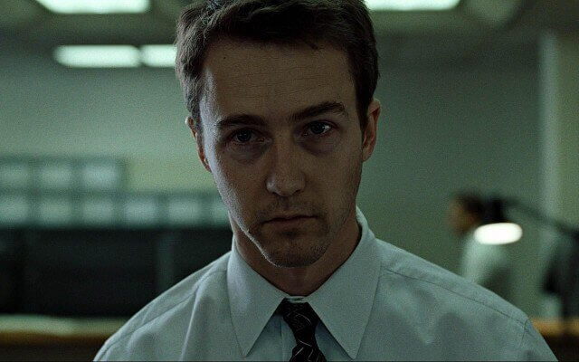

Фритрек и нулевой спринт: Подготовка к работе

Это было самое начало пути. На этом этапе важно было проникнуться основами и настроиться на учёбу. И, возможно, подумать, как новые знания могут повлиять на ваше будущее.
Любое демо к курсу практикума проходило весело и беззаботно, но не в случае с курсом Frontend разработчик. Секция с JS заставила напрячь голову.